File list
This special page shows all uploaded files.
{kind=link}
{kind=link}
| Date | Name | Thumbnail | Size | User | Description | Versions |
|---|---|---|---|---|---|---|
| 10:13, 15 April 2016 | 15048.png (file) | 495 bytes | Mayo | 1 | ||
| 15:50, 8 March 2019 | 1505.gif (file) |  |
31 KB | Alice | 1 | |
| 10:13, 15 April 2016 | 15094.png (file) | 610 bytes | Mayo | 1 | ||
| 07:43, 10 June 2016 | 15110 supp part STR.png (file) | 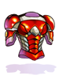 | 11 KB | Renata | 1 | |
| 07:45, 10 June 2016 | 15111 reinforced plate.png (file) | 11 KB | Renata | 1 | ||
| 10:13, 15 April 2016 | 15116.png (file) | 810 bytes | Mayo | 1 | ||
| 08:03, 6 April 2016 | 15116 airship's armor.png (file) |  |
11 KB | Renata | 1 | |
| 08:06, 6 April 2016 | 15117 felrock's armor.png (file) |  |
12 KB | Renata | 1 | |
| 18:07, 12 May 2016 | 15121.png (file) | 13 KB | Tokeiburu | 1 | ||
| 09:33, 3 July 2016 | 15138.png (file) | 12 KB | Lunch | 1 | ||
| 07:22, 27 January 2017 | 15141 rift armor.png (file) | 13 KB | Renata | 1 | ||
| 15:22, 6 March 2019 | 1516.gif (file) |  |
3 KB | Alice | 1 | |
| 15:06, 12 September 2018 | 15212.png (file) | 18 KB | I Know To Write | YSF Plate#Werner's Laboratory | 1 | |
| 01:41, 28 February 2019 | 15376.png (file) | 626 bytes | Colours | 1 | ||
| 01:29, 7 May 2019 | 15378.png (file) | 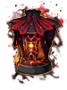 | 14 KB | I Know To Write | 1 | |
| 02:12, 7 May 2019 | 15379.png (file) | 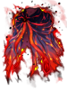 | 17 KB | I Know To Write | 1 | |
| 02:32, 7 May 2019 | 15380.png (file) | 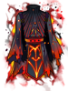 | 17 KB | I Know To Write | 1 | |
| 11:42, 27 March 2023 | 1538820766 04 ArchMage f.png.42a57c21a95693a607abaf74acb01af4.png (file) | 50 KB | Miyu | 1 | ||
| 23:04, 7 May 2019 | 1573.png (file) | 11 KB | Panic | 1 | ||
| 19:49, 11 January 2016 | 1584.png (file) | 641 bytes | Tokeiburu | 1 | ||
| 19:48, 11 January 2016 | 16017.png (file) | 469 bytes | Tokeiburu | 1 | ||
| 00:50, 12 April 2016 | 16027 ES Destroyer Hammer.png (file) | 6 KB | Renata | Reverted to version as of 00:26, 12 April 2016 | 5 | |
| 00:53, 12 April 2016 | 16027 ES Destroyer Hammer HQ.png (file) | 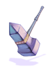 | 6 KB | Renata | 1 | |
| 07:47, 10 June 2016 | 16030 pile bunker s.png (file) | 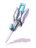 | 6 KB | Renata | 1 | |
| 07:47, 10 June 2016 | 16031 pile bunker p.png (file) |  |
7 KB | Renata | 1 | |
| 07:47, 10 June 2016 | 16032 pile bunker t.png (file) | 8 KB | Renata | 1 | ||
| 07:50, 10 June 2016 | 16033 robots mechanical arm.png (file) | 7 KB | Renata | 1 | ||
| 07:07, 27 January 2017 | 16038 infinity mace.png (file) | 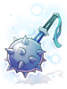 | 13 KB | Renata | 1 | |
| 08:19, 18 October 2016 | 16040.png (file) | 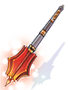 | 9 KB | Halves | 1 | |
| 15:22, 6 March 2019 | 1616.gif (file) | 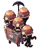 | 16 KB | Alice | 1 | |
| 10:44, 11 October 2019 | 1622.gif (file) | 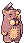 | 2 KB | Alice | 1 | |
| 12:54, 23 November 2018 | 1633.gif (file) | 3 KB | AloeLeaflet | 1 | ||
| 11:23, 15 April 2016 | 1636.png (file) | 381 bytes | Mayo | 1 | ||
| 03:51, 6 April 2016 | 1671 ES Vanquisher Staff.png (file) | 372 bytes | Renata | 1 | ||
| 00:53, 12 April 2016 | 1671 ES Vanquisher Staff HQ.png (file) | 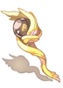 | 8 KB | Renata | 1 | |
| 15:54, 8 March 2019 | 1677.gif (file) | 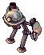 | 6 KB | Alice | 1 | |
| 15:55, 8 March 2019 | 1678.gif (file) | 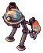 | 6 KB | Alice | 1 | |
| 15:55, 8 March 2019 | 1679.gif (file) | 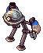 | 6 KB | Alice | 1 | |
| 08:18, 18 October 2016 | 1680.png (file) | 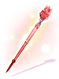 | 10 KB | Halves | 1 | |
| 17:41, 7 May 2018 | 16th Night.png (file) | 495 bytes | Ketalar | Skill for guide in progress. | 2 | |
| 14:31, 1 October 2016 | 1703.png (file) | 330 bytes | Cyphers | 1 | ||
| 15:57, 8 March 2019 | 1713.gif (file) | 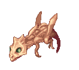 | 12 KB | Alice | 1 | |
| 15:57, 8 March 2019 | 1714.gif (file) | 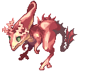 | 12 KB | Alice | 1 | |
| 15:57, 8 March 2019 | 1716.gif (file) | 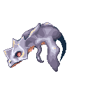 | 12 KB | Alice | 1 | |
| 15:57, 8 March 2019 | 1717.gif (file) | 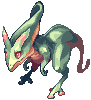 | 11 KB | Alice | 1 | |
| 15:38, 5 January 2021 | 172Cards01.png (file) | 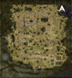 | 43 KB | Zrzovous | 1 | |
| 15:38, 5 January 2021 | 172Cards02.png (file) | 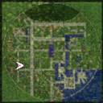 | 47 KB | Zrzovous | 1 | |
| 15:38, 5 January 2021 | 172Cards03.png (file) | 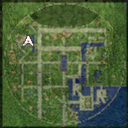 | 48 KB | Zrzovous | 1 | |
| 15:38, 5 January 2021 | 172Cards04.png (file) | 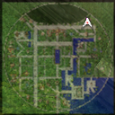 | 47 KB | Zrzovous | 1 | |
| 15:39, 5 January 2021 | 172Cards05.png (file) | 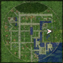 | 47 KB | Zrzovous | 1 |
{kind=link}
{kind=link}
{kind=link}
{kind=link}
{kind=link}
{kind=link}
{kind=link}
{kind=link}
{kind=link}
{kind=link}
{kind=link}
{kind=link}
{kind=link}
{kind=link}
{kind=link}
{kind=link}
{kind=link}
{kind=link}
{kind=link}
{kind=link}
{kind=link}
{kind=link}
{kind=link}
{kind=link}
{kind=link}
{kind=link}
{kind=link}
{kind=link}
{kind=link}
{kind=link}
{kind=link}
{kind=link}
{kind=link}
{kind=link}
{kind=link}
{kind=link}